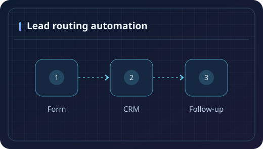
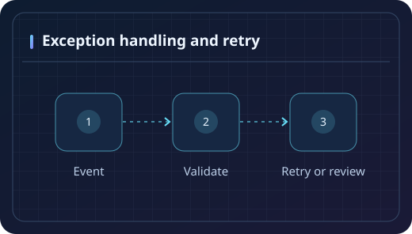
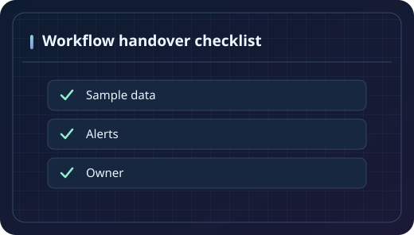

Business Automation
Connect the tools your team already uses for leads, orders and notifications. Start with a repeatable handoff you can test.
Pick a handoff that happens often
For example, a website inquiry can create a CRM entry and notify the person who owns the lead. Write down what comes in, what should happen next and who checks exceptions.
Decide how to handle failures
Agree what counts as a duplicate, when to retry and when someone should take over. Test with sample data before connecting a live inbox, CRM or online store.
What to document before connecting tools
- Trigger
- Specify what starts the workflow, such as a successful form submission or a paid order.
- Expected result
- Write which records or notifications should be created and who receives them.
- Exception handling
- Decide what happens if the source sends a duplicate or a destination is temporarily unreachable.
Walk through one real case
Pick a workflow that takes time every week and show how it works today. A website lead might be copied into a spreadsheet, assigned to a salesperson and followed up the next day. Write down the required fields and the point where a person decides what happens next.
Start with a small sample of real cases with personal details removed. Include one complete record, one missing a field and one duplicate. That gives you useful examples for deciding when a workflow should proceed, ask for attention or stop.

Give exceptions a clear owner
If a system is unavailable or sends the same event twice, decide how to retry without creating repeated orders, records or messages. A simple record of what happened lets someone check a failure and continue the work manually when needed.
For an online store, agree which system owns stock and order status. For a SaaS product, document which events should start a workflow and which should stay inside the product.

Roll out with a handover plan
Test in a controlled setup before connecting live tools. Follow one sample through from trigger to expected result and verify who receives errors. Note which accounts and permissions belong to your business and who should maintain the connection.
The scope depends on the tools involved, the available integrations, data volume and how many exceptions need handling. Bring a screenshot or written process map and one example of where time is lost today.

FAQ
Do I need to replace my CRM?
Share the tools you already use. Whether we can connect them depends on their available integrations and your account permissions.
What if an automation fails?
The scope should identify who gets alerted, which steps can retry safely and how a manual handoff works.